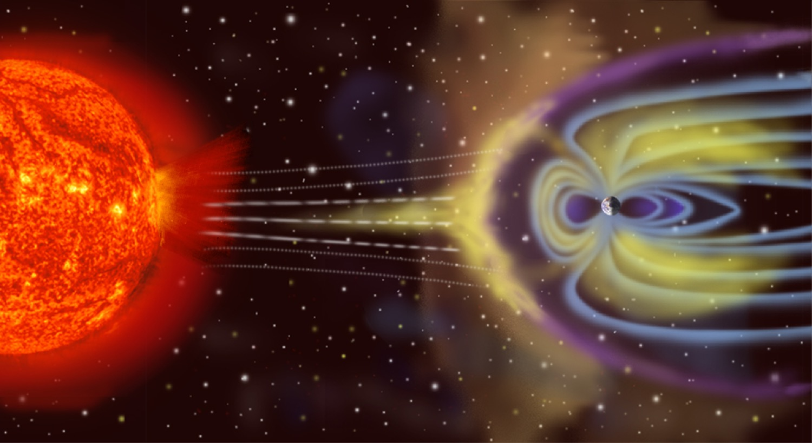

Outreach
Space isn't empty.
My personal mission is to convince you of that. For years I did it under the dome at Fiske Planetarium, at the eyepiece on public observing nights, and on convention stages. These days the live Sun on this site and Heliogram carry on the job.

Image: ESAFeatured talk
Busting Myths about Outer Space
Science Under the Dome, Fiske Planetarium.
Interviews


Where I've done it
- 2018–22Fiske Planetarium, CU Boulder Production manager and public-talk facilitator, and a regular speaker under the dome.
- 2018, 19WesterCon and Myths & Legends Con, Denver Public science talks for convention audiences.
- 2017–22SHINE Student Day Organizer and host for the conference's student program.
- 2015–22Sommers-Bausch Observatory, CU Boulder Host for public observing nights.
- 2018CU Boulder Junior Astronauts Lesson plans for an elementary after-school program.
- 2013–15Georgia Tech Observatory and Spark, Spin, and Freeze Public observing nights, and a physics demonstration show for all ages.